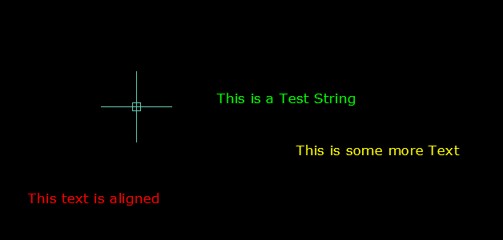
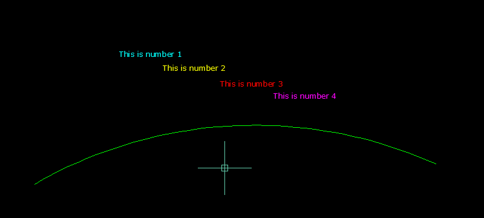

Dynamic Text Alignment
This page is delivered for consistency purposes only, as part of the LeeMac sample module of DynALisp, which shows how DynALisp turns existing AutoLISP programs into a module. The program and its description are the work of Lee Mac, who keeps all the credit for them. The original page, with the latest version, is on Lee Mac's website: https://lee-mac.com/dynamictextalignment.html
| Function Syntax | LM-DynamicTextAlign – original syntax: TxAlign (see aliases) |
| Current Version | 1.6 |
| Compatible with AutoCAD for Mac? | No |
| Compatible with AutoCAD LT? | Yes |
| Original Page | lee-mac.com/dynamictextalignment.html |
Program Description
This was one of my earlier programs, and more of an experiment into pushing the envelope of the use of input tracking functions such as GrRead. Whilst visually pleasing, in my opinion, this program is not as practical an application as it could be, but then, I shall let you be the judge of that.
This program will allow the user to dynamically align multiple MText and DText objects simultaneously to any angle, or along an object. The user is prompted for a selection of text objects and an alignment point or text object to use as a base point relative to which the text is aligned.
The user may then switch between different modes using the Tab key, depending upon how the text needs to be aligned, these modes are described below.
| Mode | Functionality |
|---|---|
| Horizontal Mode | For aligning multiple lines of text |
| Vertical Mode | For aligning a single line |
| Stretch Mode | Will evenly space text from the first text object in the selection. |
When operating within these mode, other alignment options become available to the user, including:
| Key | Functionality |
|---|---|
| R / r | Alter Text Rotation |
| Shift | Hold Shift to Rotate Text Perpendicular to the Angle of Alignment |
| J / j | Alter Text Justification |
| S / s | Space Text to a Specified Distance (Available in Horizontal/Vertical Mode) |
| O / o | (Object Alignment Mode) Align Text to an Object |
Example of Usage

Object Alignment Mode
Upon pressing O during text alignment, the user is prompted to select an object along which to align text.
Text may be aligned to any Curve Object (Spline/Arc/Ellipse/Line/Polyline/Circle.. etc), and the user is provided with additional refinement options, including the following:
| Key | Functionality |
|---|---|
| V / v | Reverse the order of the text objects along the curve |
| O / o | Dynamically Alter Text Offset from Curve |
| S / s | Dynamically Alter Text Spacing along Curve |
| R / r | Alter Text Rotation |
| Shift | Hold Shift to Align Text Rotation to Curve |
| E / e | Exit Object Alignment Mode |
Example of Object Alignment Mode

Bundled program notes
;;------------------------=={ Dynamic Text Align }==---------------------------;;
;; ;;
;; Allows the user to dynamically align text to any angle. User is prompted to ;;
;; make a selection of Text or MText objects to align, and pick an alignment ;;
;; point, or select a text object to use for alignment. The selection of text ;;
;; is then aligned by either x or y coordinate, or dynamically stretched ;;
;; depending on the mode chosen. ;;
;; ;;
;; The mode can be switched upon pressing TAB during alignment. Text and MText ;;
;; entities will be aligned in accordance with their respective justifications. ;;
;; ;;
;; The user can also specify a fixed text spacing, by pressing 'S' during text ;;
;; alignment. Holding Shift whilst aligning Text will alter Text Rotation, the ;;
;; user can also refine Rotation by pressing 'R' during text alignment. Text ;;
;; Justfication can be altered by pressing 'J' during text alignment. ;;
;; ;;
;; ;;
;; Object Alignment Mode:- ;;
;; -------------------------- ;;
;; Text can be aligned to an object by pressing 'O' during text alignment. In ;;
;; this mode, the text spacing along the object can be adjusted by pressing ;;
;; 'S' and the text offset from the object can also be altered by pressing 'O'. ;;
;; ;;
;; Text Rotation can be aligned to the tangent vector of the object at the ;;
;; point of alignment by holding Shift during text placement. The user can ;;
;; furthermore specify a text rotation by pressing 'R'. ;;
;; ;;
;; The order of the text entities along the object can be Reversed by pressing ;;
;; 'V' during Text placement. The original order of these entities is ;;
;; determined by the drawing direction of the object. ;;
;; ;;
;;-------------------------------------------------------------------------------;;
;; ;;
;; FUNCTION SYNTAX: TXALIGN ;;
;; ;;
;; Notes:- ;;
;; --------- ;;
;; Shift Functionality requires the user to have Express Tools installed. ;;
;; ;;
;;-------------------------------------------------------------------------------;;
;; ;;
;; Author: Lee Mac, Copyright © October 2009 - www.lee-mac.com ;;
;; ;;
;;-------------------------------------------------------------------------------;;
;; ;;
;; Version: ;;
;; ;;
;; 1.0: 12/10/2009 - First Release ;;
;;-------------------------------------------------------------------------------;;
;; 1.1: 14/10/2009 - Added ability to Specify fixed text spacing ;;
;;-------------------------------------------------------------------------------;;
;; 1.2: 15/10/2009 - Added Stretch Mode ;;
;; - Upgraded User messaging ;;
;;-------------------------------------------------------------------------------;;
;; 1.3: 18/10/2009 - Added Rotation Functionality ;;
;;-------------------------------------------------------------------------------;;
;; 1.4: 20/10/2009 - Added functionality to align text to object. ;;
;;-------------------------------------------------------------------------------;;
;; 1.5: 23/10/2009 - Added Justification Options. ;;
;;-------------------------------------------------------------------------------;;
;; 1.6: 28/10/2009 - Added Option to Select Text object at Alignment Point ;;
;; prompt ;;
;;-------------------------------------------------------------------------------;;
Command Names And Aliases
As in every DynALisp module, each program of this sample module has one main command, named LM-*, and the original command names of Lee Mac's page are kept as its aliases: they run the same command, and can be added, renamed or removed in Dyl-Suite (saved in Resources\Aliases.csv).
| Command | Aliases | Name |
|---|---|---|
| LM-DynamicTextAlign | TXALIGN | Dynamic Text Align |